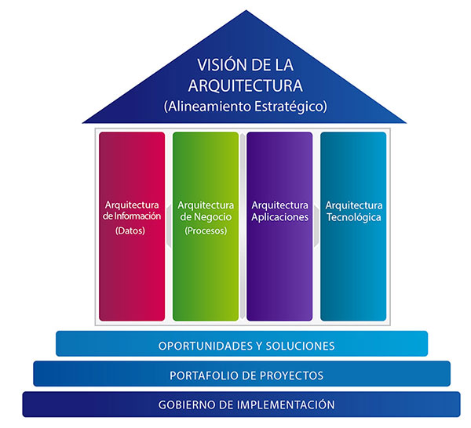

¿Que es la arquitectura empresarial?
La arquitectura empresarial es una disciplina que se enfoca en la estructura y el funcionamiento de una organizacion. Incluye:
- Estrategia de negocio: Objetivos, metas y procesos del negocio.
- Aplicaciones: Software y sistemas que soportan los procesos de negocio.
- Datos: Informacion qure la organizacion utliza y gestiona.
- Tecnologia: Infraestructura de hardware, redes y servicios de TI.
Un marco de trabajo para la arquitectura empresarial es un conjunto de herramientas, metodologías, mejores prácticas y estándares que ayudan a las
organizaciones a diseñar, planificar, implementar y gestionar su arquitectura empresarial. Su objetivo principal es alinear la estrategia de negocio con la
tecnología, garantizando que los sistemas, procesos, datos y recursos de TI estén organizados de manera eficiente para cumplir con los objetivos de la organización.
El objetivo principal de un marco es alinear los servicios de TI
con las necesidades del negocio, garantizando que la
infraestructura y los recursos de TI se utilicen de manera eficiente
y efectiva para brindar valor a los usuarios y clientes.

En la actualidad existen diferentes marcos donde sus disciplinas no se
limitan a la producción de los catálogos o planos del ecosistema SI/TI
de la empresa, además se ocupa de planificar la arquitectura SI/TI, que
dará soporte a la evolución prevista por la estrategia del negocio.
Cada vez más, es percibida por la dirección de la empresa como una
herramienta que permite identificar oportunidades de mejora de la
eficiencia y efectividad del negocio, e incluso identificar nuevas
oportunidades de evolución del mismo.
Además, se ocupa de la monitorización/gobierno de los servicios
actuales, la cartera de proyectos de construcción de nuevos servicios, y
del acompañamiento al proceso de proyectos en curso.
Estos marcos se encargan de gobernar los costes y la complejidad de
los servicios de SI/TI de la empresa, maximizando el valor que aportan
al negocio.
En esta parte recordemos el concepto de arquitectura empresarial, que consiste en optimizar dentro de la empresa todos los elementos que apoyan la
realización de la estrategia de negocio. La arquitectura empresarial posibilita tener una visión global de la empresa, incluyendo los procesos, la estructura
organizacional y las tecnologías de la información, lo que facilita su alineación con los objetivos estratégicos.